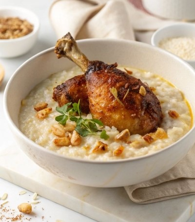

السليق الحجازي - المنطقة الغربية
.السليق هو أكلة شعبية حجازية أصيلة تشتهر بها المنطقة الغربية في المملكة العربية السعودية، وتتميز بطعمها الغني المكون من الأرز المطبوخ بالحليب والمستكة والمرق

المكونات:
- دجاجة كامله مقطعة
- كوب ارز مصري
- فصوص مستكة و هيل صحيح
- كوب حليب سائل
- سمن بلدي و ملح حسب الرغبة
خطوات التحضير :
- سلق الدجاج في الماء مع الهيل و الملح و المستكة حتى ينضج تماما.
- رفع الدجاج ودهنة بالسمنة و تحميره في الفرن.
- تصفية المرق و اضافة الارز اليه و تركه يطهى حتى يلين تماما.
- اضافة الحليب و السمن بلطف و الاستمرار في التحريك على نار هادئة.
معلومات الوجبة :
| البيان |
التفاصيل |
| وقت التحضير |
15 دقيقة |
| مدة الطهي |
50 دقيقة |
| عدد الاشخاص |
4 اشخاص |
| السعرات الحرارية التقريبية |
520 سعرة حرارية / وجبة |
<

اسم المتدربة: ريما محمد المطيري.
الرقم التدريبي:446203796
بريد المتدربة الالكتروني.